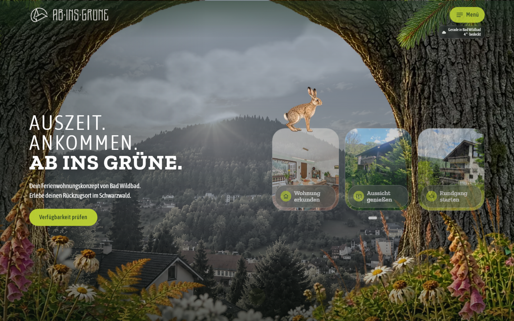

Vibe Coding Bootcamp · Finaler Check-In · 2. November 2026
Ab ins Grüne – Dein Ferienwohnungskonzept von Bad Wildbad
Wie ich mit KI eine Webseite für Direktbuchung gebaut habe
Worum es geht
Ab ins Grüne verbindet besondere Unterkünfte mit einer starken Marke, Storytelling und gezielter Kommunikation. Wir wollen Ferien nicht über Ausstattung und Lage verkaufen, sondern über ein Urlaubserlebnis, das man wiedererkennt.
Die erste Unterkunft ist eine Ferienwohnung in Bad Wildbad für bis zu sechs Gäste. Die Webseite führt Gäste direkt zur Buchung: mit Bildern, Verfügbarkeit, Preis und Buchung an einem Ort.
Im Talk zeige ich, wie ich als Gastgeberin und Gestalterin das Ganze ohne Datenbank und ohne eigenes Backend mit KI-Coding-Tools gebaut habe, und welche Entscheidungen unterwegs gefallen sind.
- Eine statische Seite (Astro), Buchung über das Smoobu-Widget
- Startseite, die sich an Jahreszeit und aktuelles Wetter anpasst
- Ein gezeichneter Hase als Wegbegleiter, 360°-Rundgang, Postkarten-Generator
- Kontaktformular mit eigenem PHP-Skript, ohne Drittanbieter
- Live seit 29. Oktober 2026

Die kritischste Annahme
Gäste buchen lieber direkt über die eigene Seite, wenn sie dort alles finden: Bilder, Rundgang, Umgebung, Kalender und Preis. Ob das trägt, und was ich dafür gebaut habe, ist der rote Faden meines Talks.

Links
- Liveab-ins-gruene.net
- Rundgangrundgang.ab-ins-gruene.net
- Vorschaulfranne.github.io/ab-ins-gruene-
vorschau - LinkedInlinkedin.com/in/franziska-löffelmann